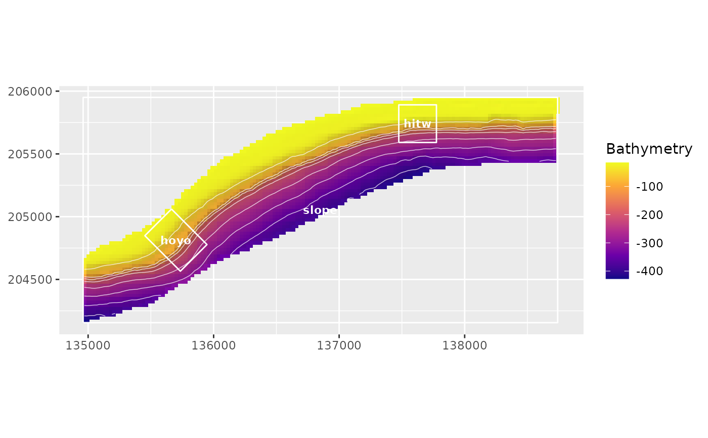

Creates ggplot2 maps for bathymetry and derived terrain metrics using
terra rasters and vectors. Hillshade can be drawn as a semitransparent
visual relief layer, and bathymetric contours, sampling rectangles, transects,
or other terra::SpatVector geometries can be overlaid.
Usage
plot_bathy(
x,
hillshade = TRUE,
hillshade_alpha = 0.3,
contours = TRUE,
contour_interval = NULL,
contour_color = "white",
contour_linewidth = 0.25,
vectors = NULL,
vector_color = "white",
vector_linewidth = 0.5,
labels = NULL,
label_field = NULL,
title = NULL,
subtitle = NULL,
caption = NULL,
legend_title = "Bathymetry",
max_cells = getOption("blueterra.max_plot_cells", 10000)
)
plot_metric(
x,
metric = NULL,
bathy = NULL,
hillshade = TRUE,
hillshade_alpha = 0.3,
contours = FALSE,
contour_interval = NULL,
contour_color = "white",
contour_linewidth = 0.25,
vectors = NULL,
vector_color = "white",
vector_linewidth = 0.5,
labels = NULL,
label_field = NULL,
title = NULL,
subtitle = NULL,
caption = NULL,
legend_title = NULL,
max_cells = getOption("blueterra.max_plot_cells", 10000)
)
plot_terrain_map(
bathy,
metric = NULL,
vectors = NULL,
contours = TRUE,
contour_interval = 20,
hillshade = TRUE,
title = NULL,
subtitle = NULL,
caption = NULL,
...
)
plot_hillshade(x, max_cells = getOption("blueterra.max_plot_cells", 10000))
plot_sampling_rectangles(bathy, rectangles, label_field = "site_id", ...)
plot_transects(bathy, transects, color_by = NULL, show_legend = FALSE, ...)
plot_metric_stack(x, max_cells = getOption("blueterra.max_plot_cells", 10000))Arguments
- x
A raster-like object accepted by
as_bathy().- hillshade
Logical. Draw hillshade as a visual relief layer.
- hillshade_alpha
Maximum alpha for the hillshade shadow overlay.
- contours
Logical. Draw contour lines from
bathyorx.- contour_interval
Optional contour interval in raster units.
- contour_color
Contour line color.
- contour_linewidth
Contour line width.
- vectors
Optional
terra::SpatVector,sfobject, or local vector path drawn over the raster.- vector_color
Vector outline color.
- vector_linewidth
Vector outline width.
- labels
Optional label source. Use
TRUEto labelvectors, or supply a vector object/path.- label_field
Optional field used for vector labels.
- title, subtitle, caption
Plot text passed to
ggplot2::labs().- legend_title
Optional raster legend title.
- max_cells
Maximum raster cells used for plotting.
- metric
Optional metric raster or a layer name/index in
bathy.- bathy
Optional bathymetry raster used to derive hillshade and contours when
xis a metric raster.- ...
Additional plotting options passed from convenience wrappers to
plot_bathy()orplot_metric().- rectangles
Sampling rectangles or polygon zones.
- transects
Transect line geometry.
- color_by
Optional transect attribute used to color lines, such as
"transect_id".- show_legend
Logical. Show a legend when
color_byis supplied.
Details
Plotting functions require ggplot2, which is suggested rather than
imported. Large rasters are regularly sampled before plotting to keep
examples and interactive work responsive. Hillshade is used only as a visual
relief layer; it is not a terrain predictor unless a user explicitly derives
and analyzes it as one.
See also
derive_terrain(), plot_metric_stack()
Examples
if (requireNamespace("ggplot2", quietly = TRUE)) {
bathy <- read_bathy(blueterra_example("bathy"))
zones <- terra::vect(blueterra_example("zones"))
plot_bathy(bathy, vectors = zones, labels = TRUE, label_field = "site_id")
}
